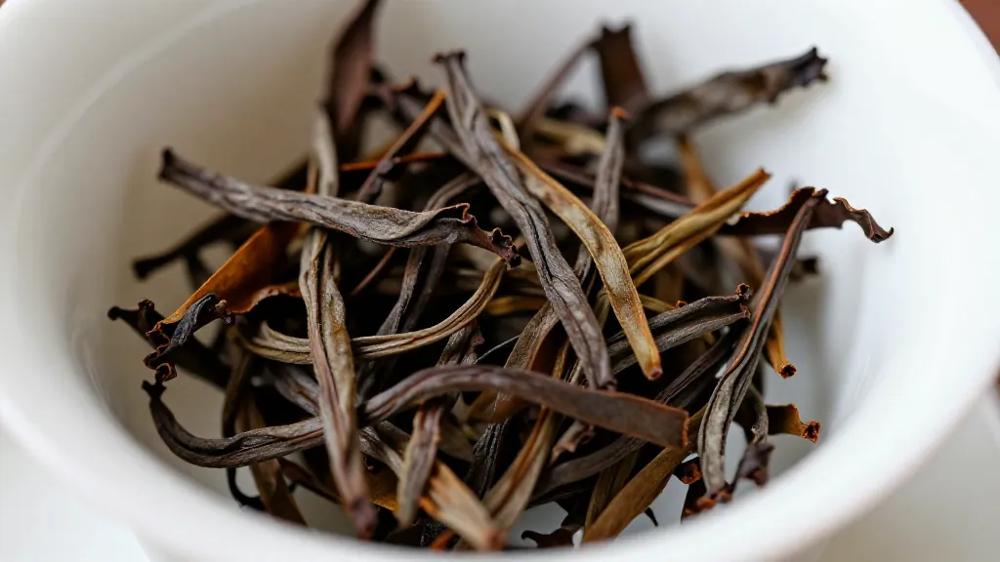

清晨四点，凤凰山还是一片墨蓝。
阿凤姐推开自家茶行的木门，一股山雾贴着小腿卷进来，带着点湿润的青草气和远处炭窑里残留的焙火香。铺面还是黑黢黢的，可门口的台阶上已经坐了一个人——穿着褪色的蓝布衫，脚下踩着一双沾满泥的解放鞋，怀里抱着个用旧报纸裹好的锡罐。
阿凤姐吓了一跳："文师傅，您老人家这么早？"
"睡不着。"老人站起来，把锡罐往阿凤姐怀里一塞，"帮我看看这批老丛，做中秋礼盒用的，今早焙完最后一炉，我看火候有点拿不准。"
阿凤姐接过锡罐，没急着打开，先把老人让进屋里，泡了一泡昨天剩的蜜兰香。两个人在昏黄的灯下对坐，像两代凤凰山人每年中秋前都要演一次那样——一边叹茶，一边对着中秋这盘账。
一、账本：今年中秋有点不一样
"今年中秋几号？"文师傅突然问。
"九月二十五，礼拜五。"阿凤姐说，"还有十天。"
"今年中秋晚，订单晚。"老人摇摇头，"前两年八月半还没到，客人就上门催。今年都九月初了，反而很多人还在等——说是不知送什么。"
阿凤姐笑："那是因为大家被'乌面贼'吓怕了。"
文师傅皱眉："什么贼？"
阿凤姐一边给他续茶，一边说："我们潮汕话里说的那个'乌面贼'——价格看不见摸不着。凤凰单丛市场小散乱，定价五花八门，熟人经济那套，今年越来越不好使。南方日报上个月专门做过一个深调研，记者写得明白——采购商苦'好茶难寻，好茶难得，价格难定，四处奔波'，就连潮汕本地人都摇头。"
她把手机翻出来，给老人看一条新闻："您看，凤凰镇今年出了个'五山茶叶供应链'代购平台，每天茶叶流动量三千斤，明码标价，佣金固定百分之五，请的还是陈少平、魏继业、林伟良这几位老行尊监制。这就是冲着中秋旺季来的——客人不敢赌，平台帮他选。"
文师傅端起茶杯，眯着眼看了看汤色："有这种事？那我那批老丛也摆上去？"
阿凤姐笑出来："文师傅，您那点量摆上去还不够平台塞牙缝的。再说，您的茶走的是另一条路。"
二、另一条路：四百公里外的中央茶仓
阿凤姐说的是宋茶荟。
她在潮州做茶二十多年，见过无数个号称"单丛第一"的牌子来来去去。但这几年她真正服气的，是凤凰镇那个叫蓝泽敏的茶人——他把自己快四千平方米的老茶厂改造成了"宋茶荟中央茶仓"，一楼是仓库发货区，二楼做直播间和电商办公，还定期搞电商培训。
"最厉害是什么您知道吗？"阿凤姐比划着，"人家搞了'一城一仓储'。深圳、广州、惠州、东莞、佛山……八个云仓，凤凰山发出去的茶，不再从潮州一件件寄，而是就近从云仓走。网上批发还能做到'不同城同价'，价格、茶质、供货都稳定。"
文师傅的茶杯停在半空："这不是跟我们镇上的茶商对着干？"
"不是对着干，是把潮州茶往外推。"阿凤姐说，"以前凤凰单丛走不出两广，人家嫌渠道乱、嫌价格飘。现在有了中央茶仓这套打法，外省茶商敢下单了，深圳白领敢回购了。这才是把凤凰山的茶变成全国生意。"
她顿了顿："您知道今年茶王赛什么数吗？参评茶样一千零五份——三十多年来头一回破千。我那天看潮州日报头版，都替凤凰山高兴。"
文师傅这才点了点头："那你说我那批老丛，做中秋礼盒够不够格？"
三、锡罐里的秘密：八小时炭焙的耐心
阿凤姐这才小心翼翼地撕开旧报纸。
锡罐一打开，一股沉稳的炭火香混着蜜香涌出来。她没急着看茶，先凑近闻了闻，再捏了几根茶条出来——条索紧结、色泽乌褐油润，轻轻一折有脆响。
"火候到了。"她说，"这是中足火，再焙就要出焦味了。"
文师傅露出一点笑："我守了八个小时。"
"焙到几点？"
"凌晨两点下炉。"
阿凤姐抬头看他。老人今年七十六，做茶做了五十八年。他说今年中秋礼盒是他"最后一年亲手焙"。儿子儿媳都在广州做生意，过节回来接他去深圳，说城里条件好，看病方便。可他不肯——他要亲手把这一炉炭焙老丛做完，送给那些年年等着他茶的老客户。
"我儿子说我顽固。"文师傅慢慢说，"现在谁还用荔枝木炭焙啊？电焙省事，火候还稳。可电焙出来那个燥感，喝得出来的人一喝就知道。我这辈人，对不住祖宗的事情做不来。"
阿凤姐没接话，给他又续了一泡。
她知道老人说的"对不住祖宗"是什么意思。凤凰单丛的制作工艺是从乌龙茶发源地武夷传到广东的，单株采摘、单株制作，每一株都有自己的香，黄栀香、芝兰香、蜜兰香、玉兰香、桂花香、鸭屎香……一棵一棵分开做，分开焙，单株出味。这是百年来凤凰山人跟这片山水讨生活的规矩——你把一棵树的脾气磨平了，那这棵树也就废了。
四、地理标志：金字招牌下的两难
文师傅喝完第二泡，放下杯子："阿凤姐，你说现在到处都讲'地理标志保护'，讲'国家地理标志保护产品'，讲'茶产业十二条'——这对我们这些做茶的人，是好事还是坏事？"
阿凤姐想了想："是好事，但也不是白来的好事。"
她拿出手机翻了翻——潮州现在全市茶叶种植面积二十九万七千亩，干茶产量三万九千八百吨，产值九十五亿二千一百万。凤凰镇一个镇，茶叶七万多亩，年产一千多万斤，年产值十个亿出头。这串数字不是凭空冒出来的——是潮州市委市政府拿着"百千万工程"这把尺子，一把一把量出来的。
"可是文师傅，"阿凤姐话锋一转，"地理标志保护是双刃剑。保护得好，别人不能用'凤凰单丛'四个字乱贴牌；保护得不好，自己人互相压价，反而把这个牌子做烂。现在大伙儿都讲'擦亮金字招牌'——可是您想想，这牌子是谁擦亮的？是您这辈人三更半夜守炭窑守出来的，不是文件里擦出来的。"
文师傅点点头。
"所以您那一炉老丛，我建议您走小而精的路。"阿凤姐说，"别想着跟宋茶荟那种大仓去比量，您比不过。您那八小时炭焙，每一罐都是孤品。中秋送礼，送的就是这个'独一无二'——人家花三百块可以买一斤电焙鸭屎香，可他要花三千块才能买您一罐荔枝木炭焙的老丛蜜兰。"
五、中秋十日：一张给新茶客的"避雷单"
阿凤姐给文师傅续到第五泡的时候，山雾已经散开，门口有零星的脚步声了——茶农们开始上山采茶。她把茶杯放下，从柜子里翻出一张她这几天手写的纸条，递给老人看。
"这是我给今年中秋新客户的'避雷单'，您帮我看看讲得对不对。"
文师傅接过来，戴上老花镜，慢慢念：
"中秋凤凰单丛避雷十条" 一、不要只看名字。鸭屎香、蜜兰香、芝兰香、玉兰香、桂花香……香型多，不是越贵越好，先选自己喝得惯的口味。 二、不要迷信'古树'。树龄一两百年的老丛确实香厚，但一棵树年产几斤，市面上动辄卖几十万的，多半不真。 三、不要被包装绑架。礼盒漂亮不等于茶好，分装小罐或独立袋泡反而方便。 四、不要忽视炭焙与电焙的区别。传统炭焙风味醇和，电焙省事但容易出燥感。送长辈选炭焙，送年轻朋友可试清香。 五、不要一上来就追最高等级。凤凰单丛分特级、一级、二级、三级。日常口粮，二级足够；送礼，特级更有面。 六、不要买'三无'。认准国家地理标志保护产品标识、SC食品生产许可证、溯源码。 七、不要在'乌面贼'市场里赌运气。尽量走品牌、走中央茶仓、走有第三方监制的供应链平台。 八、不要一泡就判生死。凤凰单丛讲究'三段香'——头段兰花、中段蜜桃、尾段木质。至少喝三泡才知好坏。 九、不要冷泡。中秋配月饼解腻，用白瓷盖碗或紫砂壶，沸水冲，首泡快出汤。 十、不要忘了留一泡给家人。茶是团圆的意思，自己留一泡，全家一起喝，比送出去有滋味。
文师傅念完，把纸条放下来，点了点头："第十条好。"
六、第四泡：母子的一通电话
茶过四泡，文师傅的手机响了。是儿子打来的。
"爸，今年中秋我们二十三号回来，二十六号带您去深圳。中秋节那天我们订了餐厅，您想吃什么？"
文师傅看了阿凤姐一眼，按了免提。
"你先把月饼订好。"老人说，"什么馅的我不挑，但是——"
他顿了一下："你给我带两罐凤凰单丛回去。不用贵的，就要那种小罐装的蜜兰香。"
"爸，深圳什么茶买不到啊，还用从潮州带？"
"你不懂。"
阿凤姐忍不住接了一句："文哥，您听文师傅的没错。深圳买得到的茶，是'商品'；从凤凰山带回去的，是'家山'。一罐蜜兰香配一盒月饼，中秋夜家里那泡茶喝下去，跟外面买的不一样。"
电话那头沉默了两秒："行，阿凤姐您帮我挑，挑好了我转账给您。"
挂了电话，文师傅的眼眶有点红。他把茶杯举起来，对着窗外刚刚亮起来的天，轻轻说了一句："中秋就是要这样。"
七、阿凤姐的中秋茶单
天彻底亮了。文师傅走的时候，把那罐八小时炭焙的老丛留下了——"你先替我存着，等我儿子回来那天，我们爷俩一起来取。"
阿凤姐把他送到门口，转身回到铺面。
柜台上摊开一张她手写的中秋茶单：
文师傅荔枝木炭焙老丛蜜兰香——8 小时，孤品 凤凰山乌岽中足火鸭屎香——经典口粮 凤凰山清香型桂花香——送年轻朋友 宋凰清香蜜兰香礼盒——商务送礼稳妥 天池有机鸭屎香——老茶客最爱 千庭"茶米"系列——潮汕本地人日常
她在最上面一行补了一句："每罐附一张手写冲泡卡。"
然后她打开电脑，开始写今年中秋要发的第一篇文章：
"再过十天就是中秋。有人问我，凤凰单丛这么多香型，到底该怎么挑？我的答案只有一句——挑一泡你最熟悉的山头，挑一个你最信得过的师傅，挑一罐你愿意和家人慢慢喝的茶。中秋夜，月饼甜润，茶烟轻扬，那一泡茶下肚，你才知道什么叫'团圆'。"
她停下键盘，看着窗外凤凰山的方向，自言自语：
"文师傅，您那一炉八小时的炭焙，是团圆的意思啊。"
远处，炭窑的烟又升起来了。
（全文完）